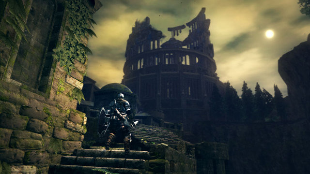

Historia
No começo não havia nada. O mundo era cinza e sem vida, e apenas uma névoa densa corria pela imensidão vazia. Os dragões imortais habitavam esse mundo cinza, e como não podiam morrer, não podiam ser considerados formas de vida. Eles eram tão constantes quanto todo o resto do mundo.
Um dia, a Primeira Chama apareceu nas profundezas e trouxe a luz e a vida. Talvez ainda mais importante, ela trouxe a disparidade. Junto com luz e vida, também chegaram as trevas e a morte. O mundo não era mais vazio e constante.
Quando a Primeira Chama se formou, as criaturas próximas a ela se levantaram para investigar. Esses seres eram os gigantes. A chama tinha muito poder concentrado, e os gigantes foram procurar por isso. Desse fogo, três gigantes saíram com almas poderosas.
Gwyn ficou com o poder da luz:
Nito, "O Primeiro dos Mortos", ganhou o poder da morte:
A Bruxa de Izalith ganhou o poder da vida e do fogo:

Os gigantes se viram poderosos e decidiram que deviam dominar o mundo, e começaram a guerra contra os dragões imortais da superfície.
Gwyn usou exércitos para enfrentar os dragões, Nito espalhou doenças pelo mundo, e a bruxa fez chover fogo nos campos de batalha. Aquela luta jamais teria um fim, se não fosse o papel decisivo de um traidor: Seath, o dragão sem escamas, o único de sua raça que não era imortal.
Tomado pela inveja de seus iguais, Seath aceitou a oferta de Gwyn para se juntar ao seu lado e revelou que o segredo da imortalidade dos dragões eram suas escamas, e entregou que apenas o novo poder da eletricidade podia destruí-las.

Gwyn prometeu uma parte de sua alma, uma posição de destaque em seu reino e um lugar para que Seath pudesse pesquisar e construir sua própria imortalidade de outra maneira.
E assim os gigantes venceram, e a Era do Fogo teve seu início.
AS IRMÃS DO CAOS
A bruxa Izalith, deusa da vida e do fogo, tentou recriar a Primeira Chama para garantir a sobrevivência da Era do Fogo. Só que se tratava de um poder imenso e incontrolável, que a transformou na entidade Berço do Caos, que deu origem a todos os monstros do mundo. E esse não foi o único efeito colateral trágico. Izalith e os seus seguidores foram consumidos pelo caos e fogo. As filhas da bruxa escaparam, mas não ilesas. Queelag foi transformada da cintura para baixo em aranha.
O mesmo aconteceu com a outra irmã, conhecida como Fair Lady, que ficou cega, fraca e ainda estava viva apenas porque vive perto de uma bonfire em Blighttown - ela é a responsável pelo Covenant of Chaos.

O filho de Izalith foi transformado em um monstro abissal e disforme chamado Ceaseless Discharge, que vive em Demon Ruins.
A única filha a escapar ilesa da chama do caos foi Quelana, que vive em Blighttown e, além de ensinar a arte da piromancia, pede a aventureiros que destruam sua mãe para poupá-la de uma eternidade de sofrimento.

CHAMAS NÃO SÃO ETERNAS
Com a disparidade, havia algo faltando, algo que ninguém percebeu quando as três grandes almas foram tiradas da chama. Se vida e morte foram dadas, a luz deveria ter o seu contraponto: as trevas. E de fato, havia uma quarta alma, a Dark Soul (alma sombria).
Ela foi conseguida por alguém conhecido por Furtive Pygmy, que a guardou para si e preferiu esconder-se e deixar o fogo se apagar. As grandes almas deram forma a seus donos, que eram como divindades. E o Furtive Pygmy se tornou o primeiro humano.
Gwyn criou o reino de Lordran, e durante a era do fogo muitos outros pequenos reinos se formaram ao seu redor.
Os humanos seguiam os gigantes, os líderes divinos da civilização. Gwyn se casou e teve três filhos: o seu primogênito, sem nome conhecido; (Existem teorias fortíssimas que nos levam a crer que esse primogênito seja o Solaire! Bem mais à frente nas outras partes abordaremos isso!)
Gwynevere, a princesa querida pelo reino

e Gwyndolin, o filho escondido e tratado como se fosse uma garota - por ter afinidade com a lua, uma característica feminina.
Enquanto o reino de Gwyn crescia, o Furtive Pygmy espalhava pequenos pedaços de sua Dark Soul. Sua alma negra dava vida aos humanos. Em outras palavras, partes da Dark Soul eram chamadas de... humanidade.
A peculiaridade de Dark Souls é que, por intermédio dos humanos, suas partes podem se multiplicar e aumentar sua influência. Conforme o fogo se apaga, a escuridão aumenta - ou talvez seja o contrário. De qualquer forma, a Era do Fogo começou a ruir com o tempo, enquanto a escuridão se fazia mais e mais presente.
Com a chama esmaecendo, medidas desesperadas foram tomadas. A Bruxa de Izalith, mãe de toda piromancia (arte do fogo), tentou recriar a Primeira Chama para conter o avanço da escuridão. Ela conseguiu por um breve tempo, mas logo perdeu o controle. A chama incompleta, viva e sem rédeas se tornou o Berço do Caos (Bed of Chaos)
e assim deu origem a todos os monstros de Lordran, modificando criaturas já existentes e criando tantas outras aberrações. Gwyn viu o poder das trevas e do que ele é capaz. Com o reino em ruínas e o seu poder acabando, ele só via uma alternativa: se sacrificar para manter a chama ardendo por mais um tempo. Adiaria o inevitável, pois nenhuma chama dura para sempre.
SEM DIREITO DE MORRER
Depois de Gwyn reacender a chama e tornar-se parte dela (que consumia seu corpo), apareceu a maldição dos mortos-vivos (Undead). Ninguém sabe porque isso aconteceu ou os motivos que faziam alguém ser escolhido, mas aqueles que ganham o símbolo de Undead perdem a capacidade de morrer definitivamente. As pessoas morrem e voltam, perdendo sua humanidade e sanidade aos poucos, até ficarem sem consciência a ponto de virarem os chamados Hollow, seres que instintivamente atacam outros para saciar sua sede de almas. Os Hollows podem voltar a ser humanos ao usarem um pouco de humanidade, e mantém a consciência sã absorvendo almas.

Com o tempo, surgiu a profecia que dizia que um Undead escolhido surgiria, iria para a terra dos gigantes encerrar o trabalho de Gwyn (apagar o fogo) e descobriria o segredo dos Undead. Esse escolhido (nosso personagem!!) está em um dos hospícios construídos longe de Lordran, onde apenas Hollows são jogados.
Um homem chamado Oscar de Astora, que vem de uma família cuja profecia do Undead escolhido sempre era citada, acha que essa (você) pode ser a pessoa certa, e dá a chave para sair da cela.
Pouco depois, Oscar é ferido pelo guardião da prisão, o Asylum Demon.
Antes de morrer, ele dá sua garrafa de Estus (Estus Flask), que tem a capacidade de recuperar a vitalidade de quem a bebe e pode ser enchida em qualquer Bonfire, as fogueiras espalhadas por Lordran.
Ao fugir, o escolhido é surpreendido por um grande corvo
e é carregado para a terra dos deuses e gigantes, Lordran. Após tocar os dois Sinos do Despertar, o escolhido chega em Anor Londo, a cidade dos deuses.
Mas nenhum deles está lá, exceto Gwynevere, que entrega o Lordvessel e diz para conseguir as grandes almas (de Nito,
Berço do Caos,
Seath
e dos Quatro Reis,
que ganharam pedaços da alma de Gwyn), e oferecê-las ao fogo da pira para abrir caminho para onde Gwyn está.
AS SERPENTES
Após pegar o item Lordvessel, o escolhido encontra duas grandes serpentes. Uma delas é a Kingseeker Frampt., em Firelink Shrine, seu local seguro de repouso.

Frampt diz que o dever do escolhido é suceder Gwyn e manter a chama acesa para que o mundo não se acabe em trevas, Essa parece ser a idéia correta. Na verdade, quem não explora o jogo de um jeito bem específico talvez nunca encontre algo que conteste essa idéia. Mas as serpentes são mestras da manipulação. Porém , há outra serpente chamada Darkstalker Kaathe,

nas profundezas do abismo das trevas que apenas Artorias, o lendário guerreiro, conseguiu andar.
Quando o escolhido chega lá, é surpreendido com a verdadeira versão dos fatos, até então totalmente desconhecida:
"Devo revelar a verdade, sem remorso. Após o advento do fogo, os senhores antigos encontraram as três almas. Mas seu progenitor encontrou uma quarta alma, única. A Dark Soul. Seu ancestral tomou a alma para si e esperou o fogo se apagar. E logo as chamas se apagaram, e apenas a escuridão sobrou. E assim teve início a era dos homens, a Era da Escuridão.
Porém Gwyn temia o escuro. Abraçando sua Era do Fogo, e por ter medo dos humanos e do Senhor das Trevas que um dia nasceria entre eles, Gwyn resistiu ao curso da natureza. Ao se sacrificar para manter a chama viva, e comandando seus filhos para guiarem os humanos, Gwyn apagou o seu passado para prevenir o seu nascimento, o nascimento do Senhor das Trevas. Eu sou uma serpente primordial. Eu quero reparar os erros do passado e encontrar nosso verdadeiro Senhor. Mas a outra serpente, Frampt, perdeu seu juízo e se aliou a Gwyn. Guerreiro Undead, estamos em uma encruzilhada. Apenas eu sei a verdade sobre o seu destino. Você precisa destruir o decadente Gwyn, que mantém o fogo e resiste à natureza, e tornar-se o quarto Senhor, para que possa enfim trazer a Era da Escuridão", revela Kaathe.

E assim o escolhido fica sabendo de sua importância, e que o futuro está em suas mãos. Há duas saídas: a primeira é seguir o desejo dos seguidores de Gwyn e reacender a chama. Mas isso não seria um simples remendo temporário? Nem mesmo o sacrifício de Gwyn manteve a chama acesa por muito tempo. No fim, o escolhido só iria continuar o fogo por mais um tempo, à espera de que outra pessoa o substituísse. Por outro lado, derrotar Gwyn e deixar a chama morrer é mesmo a solução correta? As serpentes são seres manipuladores, então porque Kaathe seria diferente de Frampt? Tudo o que envolve um excesso de trevas não parece acabar bem, e quem sabe o que acontece quando a escuridão se espalha demais? A história do reino de Oolacile mostra que a escuridão pode muito bem corromper os seres do mundo.
O escolhido precisa tomar essa decisão, pois não há mais volta. Ele vai morrer e voltar quantas vezes for necessário até cumprir o seu destino. Entre manipulações de todos os lados e inimigos perigosos, não há a opção de um final feliz. Pois em Lordran, tudo acaba em tragédia.

A CHAMA
O local da primeira chama é o último do cenário do jogo, Kiln of the First Flame. Após o fracasso de Izalith, Gwyn saiu de Anor Londo com metade de seus cavaleiros para reacender a chama com seu próprio poder - ele deixou sua alma sagrada com Seath e com os quatro reis de New Londo. A nova chama ardeu forte e incinerou todos os cavaleiros que Gwyn levou consigo, que foram usados como combustível.

O IMORTAL
Após a grande traição de Seath contra sua raça, apenas um dragão restou: o Everlasting Dragon, que vive em Ash Lake. É impossível matá-lo, mas você pode cortar a cauda dele para ganhar uma espada.

HISTÓRIAS DE LORDRAN
É um pouco difícil separar o que acontece no reino de Lordran e o que são apenas interpretações de eventos. Vamos separa as coisas por personagens e eventos, para não complicar muito a história.

OS FILHOS DO LORDE GWYN
Gwyn teve três filhos. O primogênito era como um deus da guerra, um guerreiro sem igual. Um dia ele cometeu um erro e perdeu os registros de seu reino, fazendo com que boa parte das recordações e arquivos de história sumisse. Como punição, Gwyn o deserdou, tirou seu status de divindade e, cobrando na mesma moeda, apagou tudo sobre a existência de seu filho, deixando-o até sem nome.

Gwynevere era filha adorada do senhor de Lordran. Querido por todos e sempre bondosa. Porém, com o início da queda da Era do Fogo, ela foi embora, assim como todas as outras divindades de Anor Londo. Fugiu com Flann, o deus do fogo. Gwyndolin é mais curioso. Ele foi criado como uma filha, por ter nascido com afinidade para a lua - um traço feminino, aliado ao fato de que ele parece uma mulher, também. Além disso, Gwyn o escondeu do resto do reino. O que se descobre é que Gwyndolin é a única divindade que restou em Anor Londo, a cidade dos gigantes e centro de Lordran.

Após derrotar os guardiões Ornstein e Smough e chegar na sala do trono, o escolhido encontra uma Gwynevere aparentemente comum (apesar do enorme tamanho), que entrega o Lordvessel.

Na verdade ela é apenas uma ilusão criada por Gwyndolin, assim como quase tudo que se vê em Anor Londo. Os inimigos (exceto pelos guardiões) desaparecem quando a farsa é revelada, e até mesmo o sol vai embora. O sol que se vê lá é uma miragem criada para manter a imponência da cidade, construída para "ficar próxima ao sol".

E se Gwynevere que deu o Lordvessel era uma ilusão, podemos dizer que Gwyndolin está ajudando Gwyn a guiar o escolhido a manter a chama acesa - mesmo que seu pai o odeie. O filho bastardo é sem dúvida uma das forças principais da história, envolvido por baixo dos panos em muito do que acontece em Lordran e com o Undead escolhido.
SOLAIRE DE ASTORA
Solaire aparece em vários lugares durante sua aventura, sempre em busca do "sol". Ele não sabe bem o que é o sol que procura tanto, mas não se cansa de ir atrás dele. Mais curioso ainda é o fato de Solaire sempre estar lá para ajudá-lo antes dos chefes mais difíceis (caso seja necessário), mas ele próprio nunca precisa de ajuda.
E por que o seu covenant, Warriors of Sunlight, fica ao lado de um pequeno altar dedicado à esposa de Gwyn? Preste atenção na estátua da esposa e note uma pequena criança segurando uma espada quebrada.
O cabo desta espada parece familiar... Parece a espada dos Warriors of Sunlight. Seria Solaire, então, o filho esquecido do Lorde Gwyn? É bem provável. Mesmo que não haja uma prova cabal, mesmo que ele não troque uma palavra mesmo se for chamado para enfrentar Gwyn, tudo aponta para isso. Obcecado pelo sol que lhe foi tirado, aquele que agora se chama Solaire continua a manter a ordem e ajudar a quem precisa, e parece não se importar com qual dos futuros cairá sobre Lordran.
OOLACILE E ARTORIAS
Os motivos que levam a desacreditar das boas intenções de Kaathe estão em Oolacile, uma cidade que foi devastada há muito tempo. Era uma cidade, acima de tudo, de humanos, e que celebrava a humanidade. Era muito próspera e intelectual... até que resolveram dar ouvidos a uma serpente. Ela disse que em algum lugar ali perto estava a tumba daquele que começou a escuridão, uma fonte de humanidade, o que deixaria todos mais vivos. E assim mexeram em algo que não deveria e despertaram o Abismo da Escuridão.

Boa parte de Oolacile foi corrompida pela escuridão. Fica claro que um mundo dominado pelo abismo da escuridão parece tão ruim quanto o prolongamento da Era do Fogo. Eles acordaram Manus, o Pai das Trevas, que parece ser o que restou do Furtive Pygmy.
Após dominar a cidade, o abismo começou a se expandir, e coube a um guerreiro impedir esse avanço: Artorias, aquele que anda sobre o abismo, um dos quatro guerreiros protetores de Lordran.

A ameaça do abismo é maior do que ele podia aguentar, e Artorias acabou ferido ao tentar proteger a vida de seu fiel lobo, Sif.

Felizmente, um certo humano, vindo de outra época (trata-se do nosso personagem, que foi para o passado no DLC de Artorias), conseguiu não apenas deter o abismo e salvar Sif, mas salvou um Artorias dominado pela escuridão. Apesar do pouco de dignidade em sua morte, Artorias virou um herói lendário e ganhou a fama de ter impedido as trevas.

https://alvanista.com/darksouls/posts/2647861-dark-souls-enredo-parte-7-spoilers